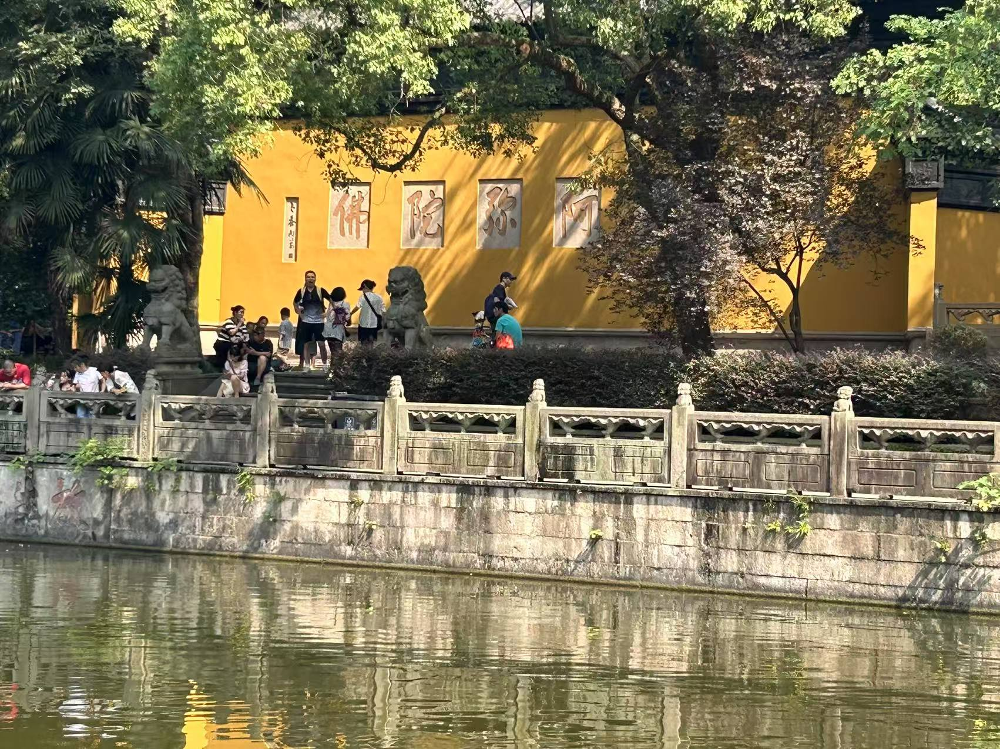
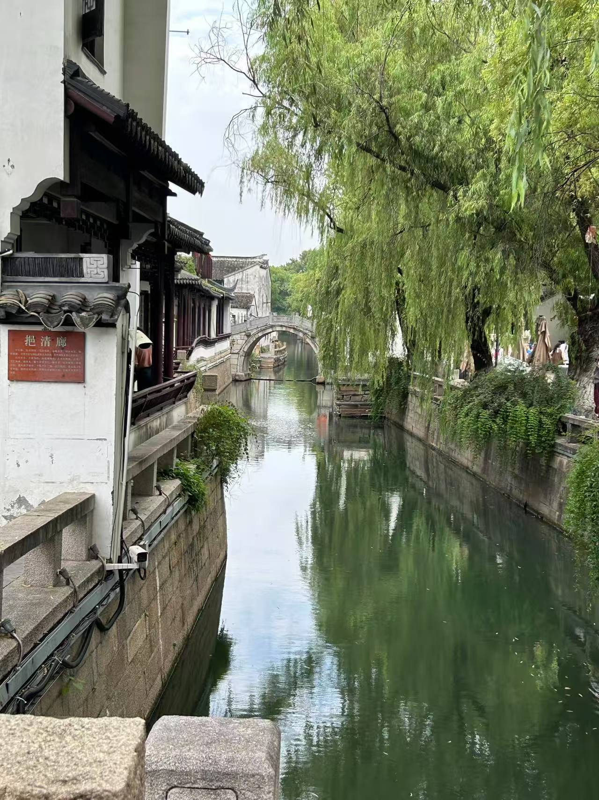
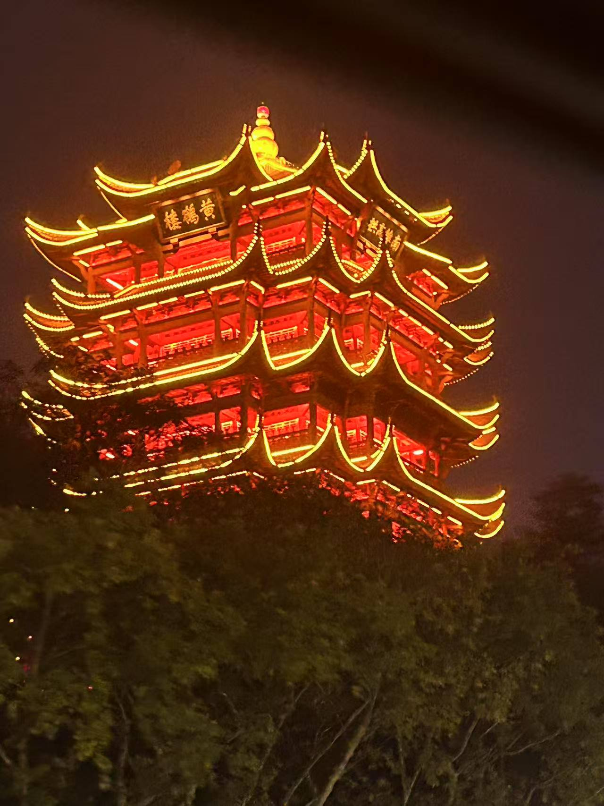
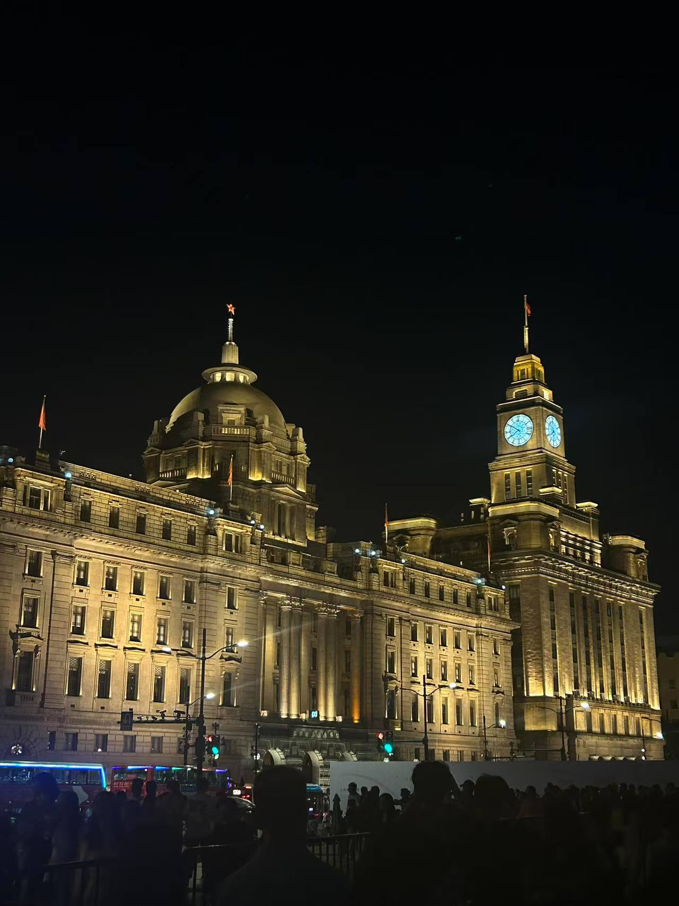
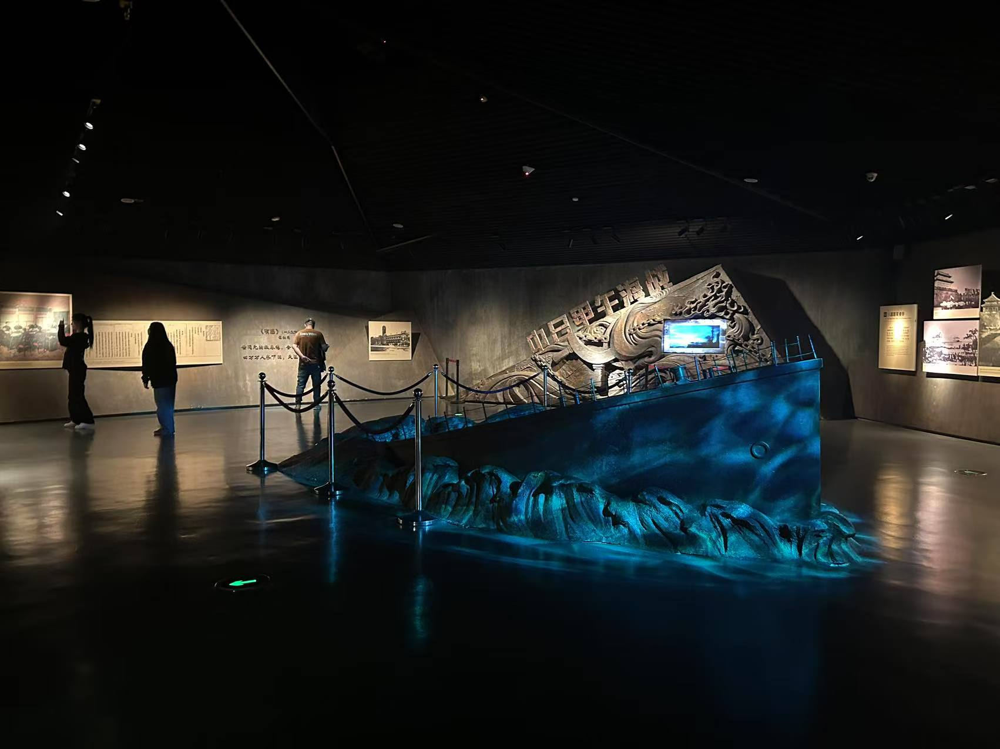

我对于旅行的看法感受
旅行是我生活中重要的一部分，我喜欢用脚步丈量世界，用相机记录美好。特别是大学开始后，我就利用假期时间探索不同的城市，体验各地的风土人情。

杭州西园寺
高考后，去了著名的杭州西园寺，感受了古寺庙的美与静。

苏州平江路
大一暑假去了平江路，领略了江南独特的风景。

武汉黄鹤楼
上大学后，参观了我大学所在地著名的景点黄鹤楼。

上海外滩
大一国庆假期游览上海，去了很著名的外滩，在这里感受到大城市上海的自由与发展。

江西滕王阁
大二清明节和好朋友去了江西的滕王阁，感受它的宏伟历史。

辛亥革命博物馆
大一寒假想了解辛亥革命的历史，专门去了一趟辛亥革命博物馆。